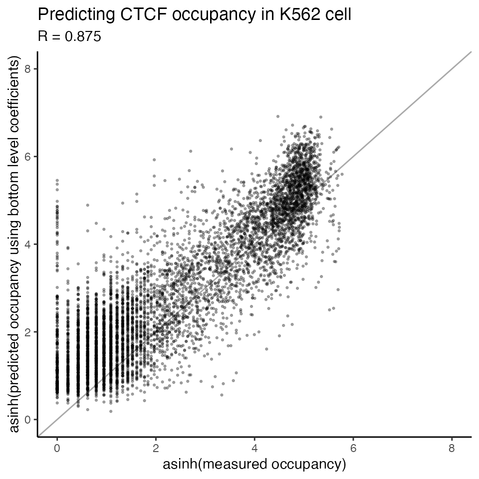
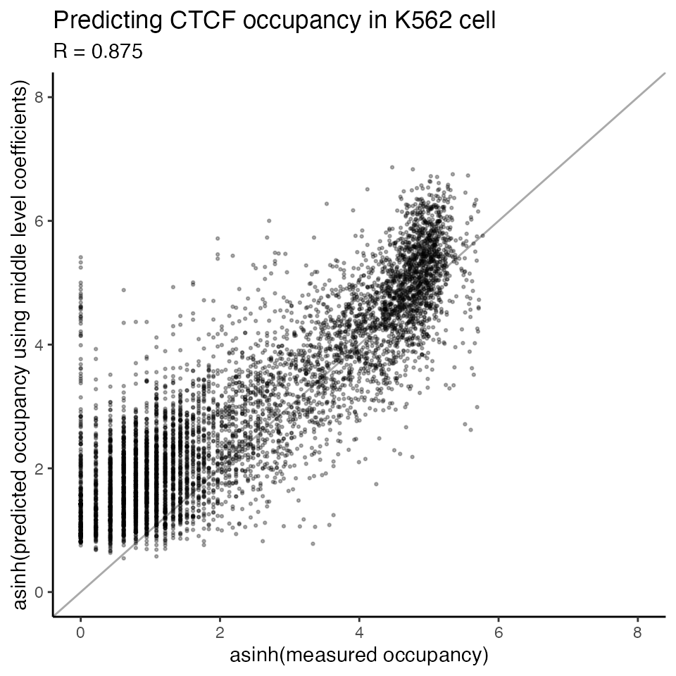

Predict TF occupancy using trained TOP model
Source:vignettes/predict_TF_occupancy_with_trained_model.Rmd
predict_TF_occupancy_with_trained_model.RmdLoad data
To make predictions using trained TOP models, we first need to prepare the input data as a data frame, with six columns.
Columns from left to right are PWM scores and five DNase (or ATAC) bins.
You can follow this page to prepare the input data.
Let’s load an example ATAC-seq dataset to predict CTCF occupancy in K562 cell type.
data <- readRDS('../inst/extdata/processed_data/CTCF_MA0139.1_1e-5.K562.ATAC.M5.combined.data.rds')
head(data,3)
#> chr start end name pwm.score strand p.value bin1 bin2 bin3
#> 1 chr1 11122 11341 site1 22.4839 - 9.17e-09 0.2232134 0.0000000 0
#> 2 chr1 11180 11399 site2 20.7581 - 5.22e-08 0.0000000 0.2232134 0
#> 3 chr1 24681 24900 site3 16.5645 - 1.31e-06 0.0000000 0.0000000 0
#> bin4 bin5
#> 1 0 0
#> 2 0 0
#> 3 0 0Load pre-trained TOP models
We have trained models for DNase-seq and ATAC-seq using ENCODE data.
The pre-trained model parameters can be downloaded from here.
Predict TF occupancy using trained TOP model
We can make predictions using the posterior mean of pre-trained TOP model regression coefficients for ATAC-seq.
TOP_coef <- readRDS('../inst/trained_model_coef/ATAC/TOP_M5_posterior_mean_coef.rds')Now we can predict CTCF occupancy in K562 cell type using the predict_TOP function:
We can choose the “bottom” level regression coefficients as we have CTCF ChIP data from K562 cell type in our training set.
TOP_result <- predict_TOP(data,
tf_name = 'CTCF', # predict CTCF in K562 cell
cell_type = 'K562',
TOP_coef = TOP_coef,
level = 'bottom', # use the best available level
logistic.model = FALSE, # use the quantitative occupancy model
transform = 'asinh') # we used asinh transformation on the ChIP data when training the model
#> Choose the bottom level model for CTCF in K562 ...
#> Model features: pwm.score bin1 bin2 bin3 bin4 bin5
#> Predicting TF occupancy using TOP occupancy model...Or, we can select the “best” available level of coefficients for the TF and cell type of interest. In this case, the “bottom” level is the best level.
TOP_result <- predict_TOP(data,
tf_name = 'CTCF', # predict CTCF in K562 cell
cell_type = 'K562',
TOP_coef = TOP_coef,
level = 'best', # use the best available level
logistic.model = FALSE, # use the quantitative occupancy model
transform = 'asinh') # we used asinh transformation on the ChIP data when training the model
#> Find the best available model for CTCF in K562 ...
#> Choose the bottom level model...
#> Model features: pwm.score bin1 bin2 bin3 bin4 bin5
#> Predicting TF occupancy using TOP occupancy model...This result contains a list with the level of model, regression coefficients (posterior mean) used to make predictions, and predictions of TF occupancy.
The prediction result contains the training data together with predicted TF occupancy for each candidate site:
TOP_predictions <- TOP_result$predictions
head(TOP_predictions, 5)
#> chr start end name pwm.score strand p.value bin1 bin2
#> 1 chr1 11122 11341 site1 22.4839 - 9.17e-09 0.2232134 0.0000000
#> 2 chr1 11180 11399 site2 20.7581 - 5.22e-08 0.0000000 0.2232134
#> 3 chr1 24681 24900 site3 16.5645 - 1.31e-06 0.0000000 0.0000000
#> 4 chr1 91319 91538 site4 15.1774 + 3.11e-06 0.2232134 0.2232134
#> 5 chr1 104884 105103 site5 15.6613 - 2.32e-06 0.0000000 0.0000000
#> bin3 bin4 bin5 predicted
#> 1 0.0000000 0.0000000 0.0000000 1.6817220
#> 2 0.0000000 0.0000000 0.0000000 1.8754262
#> 3 0.0000000 0.0000000 0.0000000 0.9999525
#> 4 0.0000000 0.4361803 0.2232134 1.3520442
#> 5 0.2232134 0.0000000 0.0000000 0.8549006We can plot the predicted occupancy vs. measured occupancy
data_chip <- readRDS('../inst/extdata/processed_data/CTCF_MA0139.1_1e-5.K562.ATAC.M5.ChIP.combined.data.rds')
scatterplot_predictions(x = asinh(data_chip$chip),
y = asinh(TOP_predictions$predicted),
title = 'Predicting CTCF occupancy in K562 cell',
xlab = 'asinh(measured occupancy)',
ylab = 'asinh(predicted occupancy using bottom level coefficients)',
xlim = c(0,8),
ylim = c(0,8))
We can also try the “middle” level regression coefficients for CTCF, which are cell-type generic, thus could be used to predict CTCF in any cell types.
TOP_middle_result <- predict_TOP(data,
tf_name = 'CTCF', # predict CTCF in K562 cell
cell_type = 'K562',
TOP_coef = TOP_coef,
level = 'middle', # use the best available level
logistic.model = FALSE, # use the quantitative occupancy model
transform = 'asinh') # we used asinh transformation on the ChIP data when training the model
#> Choose the middle level model for CTCF ...
#> Model features: pwm.score bin1 bin2 bin3 bin4 bin5
#> Predicting TF occupancy using TOP occupancy model...
TOP_middle_predictions <- TOP_middle_result$predictionsWe can see the performance of the “middle” level model is very close to the “bottom” level.
data_chip <- readRDS('../inst/extdata/processed_data/CTCF_MA0139.1_1e-5.K562.ATAC.M5.ChIP.combined.data.rds')
scatterplot_predictions(x = asinh(data_chip$chip),
y = asinh(TOP_middle_predictions$predicted),
title = 'Predicting CTCF occupancy in K562 cell',
xlab = 'asinh(measured occupancy)',
ylab = 'asinh(predicted occupancy using middle level coefficients)',
xlim = c(0,8),
ylim = c(0,8))
Predict TF binding probability using trained TOP logistic model
We can also predict TF binding probability for these candidate sites using pre-trained TOP logistic model.
Load pre-trained TOP logistic regression coefficients:
TOP_logistic_coef <- readRDS('../inst/trained_model_coef/ATAC/TOP_logistic_M5_posterior_mean_coef.rds')Predict CTCF binding probability in K562 cell type using the “bottom” level logistic regression coefficients:
TOP_result <- predict_TOP(data,
tf_name = 'CTCF',
cell_type = 'K562',
TOP_coef = TOP_logistic_coef,
level = 'bottom',
logistic.model = TRUE)
#> Choose the bottom level model for CTCF in K562 ...
#> Model features: pwm.score bin1 bin2 bin3 bin4 bin5
#> Predicting TF binding probability using TOP logistic model...
predicted.prob <- TOP_result$predictions
head(predicted.prob, 5)
#> chr start end name pwm.score strand p.value bin1 bin2
#> 1 chr1 11122 11341 site1 22.4839 - 9.17e-09 0.2232134 0.0000000
#> 2 chr1 11180 11399 site2 20.7581 - 5.22e-08 0.0000000 0.2232134
#> 3 chr1 24681 24900 site3 16.5645 - 1.31e-06 0.0000000 0.0000000
#> 4 chr1 91319 91538 site4 15.1774 + 3.11e-06 0.2232134 0.2232134
#> 5 chr1 104884 105103 site5 15.6613 - 2.32e-06 0.0000000 0.0000000
#> bin3 bin4 bin5 predicted
#> 1 0.0000000 0.0000000 0.0000000 0.059607973
#> 2 0.0000000 0.0000000 0.0000000 0.065258576
#> 3 0.0000000 0.0000000 0.0000000 0.014122312
#> 4 0.0000000 0.4361803 0.2232134 0.018720164
#> 5 0.2232134 0.0000000 0.0000000 0.009578779
hist(predicted.prob$predicted, main="Distribution of predicted binding probabiliy", xlab="P(bound)")